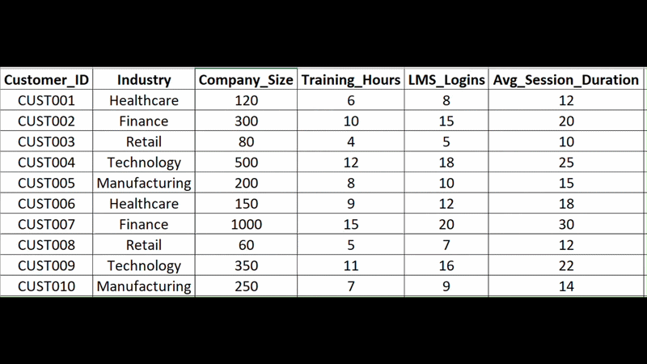
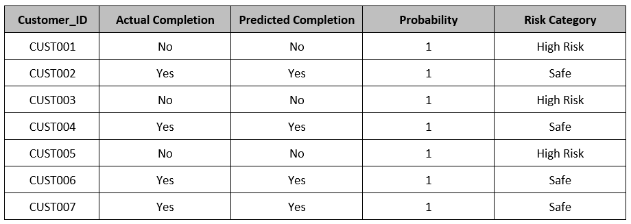
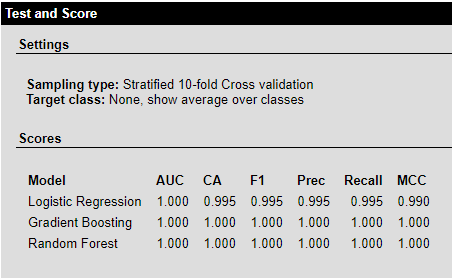
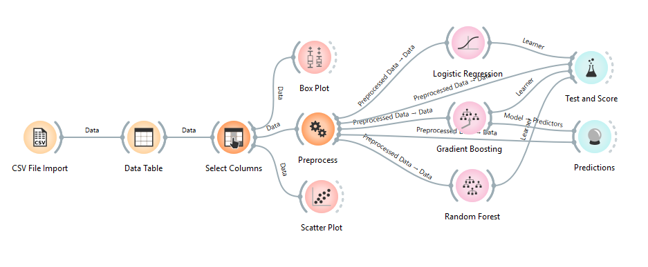

Machine learning-based analytics system developed to predict SaaS customer training completion, identify dropout risks, and recommend targeted interventions for improved product adoption and retention.
| Model | Purpose |
| Logistic Regression | Baseline probability of completion |
| Random Forest | Mixed feature prediction |
| Gradient Boosted Trees | High accuracy dropout risk prediction |

Sample of customer training data including LMS logins, support tickets, and completion status.

Actual vs predicted completion outcomes with probability scores and risk categories.

Accuracy, precision, recall, F1, and AUC scores comparing Logistic Regression, Random Forest, and Gradient Boosted Trees.
| Insight | Observation |
|---|---|
| LMS Logins | Customers with <5 logins had 70% dropout risk. |
| Support Tickets | Customers raising >2 tickets were 3× more likely to drop out. |
| Success Calls | At least 1 success call increased completion by 40%. |
The system could help identify early dropout risks, enabling proactive measures to improve retention.
Predictive insights may support customer success teams in boosting renewal rates through timely interventions.
Models can highlight high‑risk customers and explain feature‑level drivers of dropout for better decision‑making.
Insights could be used to design proactive calls, gamified nudges, and tailored support strategies.
